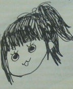

| 2011/11 14 Mon | ひめたん(*ゝω･*)ﾉその1 |
若干遅刻気味ではありますが…
祝
★
ブログ初登場(`・ω・')ゞ
ついに始まりましたー拍手っ!
ずっと伝えたかったことがあります!
お見立て会に遊びに来てくださった方、
お手紙やプレゼントや素敵なメッセージをくださった方、
そして、そしてそして
乃木坂46ブログデビューを楽しみしてくださった方、
本当に
ありがとうございました
!!!
それでは自己紹介しまーす
／
乃木坂１の甘えん坊で寂しがり屋な
ひめたん
こと中元日芽香です!
よろしくお願いします♪
＼


なーちゃん
(西野七瀬画伯)作
「似てるー!」って評判だったからおそらくこんな顔してます♪わら
乃木坂46のホームページの写真こっちとかえてもらおっかな…
ちょっとスタッフさんに交渉してみますね(
*
/ω＼
*
)ぷ
んーこんな感じで更新頑張るのでこれからも
遊びに来て下さい∩^ω^∩
それでは短い時間でしたが
ひめたんの日記読んでくださって
ありがとうございましたっ(
*
^^
*
)/"
これからも
努力と感謝の気持ちを忘れず
精一杯頑張ります!
よろしくお願いします(^^)!
おやすみなさいっ
★
☆
ひめたん